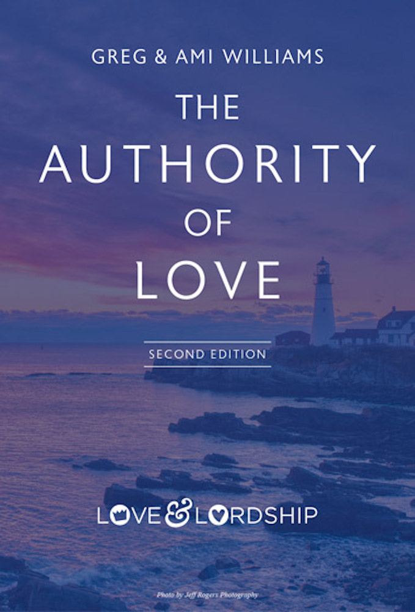

<!doctype html>
<html lang="en">
<head>
  <meta charset="utf-8" />
  <meta name="viewport" content="width=device-width, initial-scale=1" />
  <title>The Authority of Love — Greg Williams</title>
  <meta name="description" content="The Authority of Love by Greg Williams — a discipleship foundation for marriage, family, and every relationship. Now available in second edition." />
  <link rel="canonical" href="https://loveandlordship.com/pages/the-authority-of-love.html" />
  <meta property="og:type" content="website" />
  <meta property="og:title" content="The Authority of Love" />
  <meta property="og:description" content="The Authority of Love by Greg Williams — a discipleship foundation for marriage, family, and every relationship. Now available in second edition." />
  <meta property="og:url" content="https://loveandlordship.com/pages/the-authority-of-love.html" />
  <meta property="og:image" content="https://loveandlordship.com/assets/images/og-image.jpg" />
  <meta property="og:image:width" content="1200" />
  <meta property="og:image:height" content="630" />
  <meta property="og:site_name" content="Love &amp; Lordship" />
  <meta name="twitter:card" content="summary_large_image" />
  <link rel="icon" href="/favicon.ico" sizes="any" />
  <link rel="icon" type="image/png" sizes="32x32" href="/assets/images/favicon-32.png" />
  <link rel="apple-touch-icon" href="/assets/images/apple-touch-icon.png" />
  <meta name="theme-color" content="#234090" />
  <script type="application/ld+json">{"@context": "https://schema.org", "@type": "Book", "name": "The Authority of Love", "bookEdition": "Second Edition", "author": [{"@type": "Person", "name": "Greg Williams"}, {"@type": "Person", "name": "Ami Williams"}], "publisher": {"@type": "Organization", "name": "Love & Lordship"}, "url": "https://loveandlordship.com/pages/the-authority-of-love.html", "image": "https://loveandlordship.com/assets/images/book-cover-front.jpg", "workExample": [{"@type": "Book", "bookFormat": "https://schema.org/Paperback", "url": "https://bit.ly/TAOL2edPB"}, {"@type": "Book", "bookFormat": "https://schema.org/EBook", "url": "https://bit.ly/TAOL2EdKindle"}]}</script>

  <link rel="preconnect" href="https://fonts.googleapis.com" />
  <link rel="preconnect" href="https://fonts.gstatic.com" crossorigin />
  <link href="https://fonts.googleapis.com/css2?family=Newsreader:ital,opsz,wght@0,6..72,300..600;1,6..72,300..600&family=Manrope:wght@400;500;600;700&family=Cormorant+Garamond:ital,wght@0,400;0,500;1,400;1,500&family=JetBrains+Mono:wght@400;500&display=swap" rel="stylesheet" />

  <link rel="stylesheet" href="../styles.css" />
  <link rel="stylesheet" href="../components/nav.css" />
  <link rel="stylesheet" href="../components/hero.css" />
  <link rel="stylesheet" href="../components/pillars.css" />
  <link rel="stylesheet" href="../components/book-media.css" />
  <link rel="stylesheet" href="../components/sections.css" />
  <link rel="stylesheet" href="../components/pages.css" />
</head>
<body>
  <div id="root"></div>

  <script src="https://unpkg.com/react@18.3.1/umd/react.production.min.js" integrity="sha384-DGyLxAyjq0f9SPpVevD6IgztCFlnMF6oW/XQGmfe+IsZ8TqEiDrcHkMLKI6fiB/Z" crossorigin="anonymous"></script>
  <script src="https://unpkg.com/react-dom@18.3.1/umd/react-dom.production.min.js" integrity="sha384-gTGxhz21lVGYNMcdJOyq01Edg0jhn/c22nsx0kyqP0TxaV5WVdsSH1fSDUf5YJj1" crossorigin="anonymous"></script>
  <script src="https://unpkg.com/@babel/standalone@7.29.0/babel.min.js" integrity="sha384-m08KidiNqLdpJqLq95G/LEi8Qvjl/xUYll3QILypMoQ65QorJ9Lvtp2RXYGBFj1y" crossorigin="anonymous"></script>

  <script type="text/babel" src="../components/nav.jsx"></script>
  <script type="text/babel" src="../components/footer-events-app.jsx"></script>
  <script type="text/babel" src="../components/page-shell.jsx"></script>

  <script type="text/babel">
    const BOB_RUSSELL = { q: "This is such an important book for today's church. In my fifty plus years of ministry I have witnessed churches so concerned about being relevant that they wind up reflecting the culture rather than redeeming it. Greg's book is indeed, a 'wake up call for the modern-day American church' to restore the Biblical standards of marriage, family and the church which are still compelling and transforming.", by: "Bob Russell", role: "CEO, Bob Russell Ministries · Senior Minister (Retired), Southeast Christian Church, Louisville, KY" };
    // Table of Contents from Greg's "TAOL TOC - Website" doc (printed second edition).
    const SECTIONS = [
      { n: "1", t: "Authority & Love", ch: [[1, "True Authority"], [2, "But Why Authority? Let’s Just Love One Another"], [3, "Authority According to God’s Covenant Order"]] },
      { n: "2", t: "The Story of Two Kingdoms", ch: [[4, "The Kingdom & Lordship of Christ"], [5, "Authority & Truth"], [6, "The False Kingdom"], [7, "Only Two Kingdoms, Two Kings, Two Lords"]] },
      { n: "3", t: "Discipleship: Response Required", ch: [[8, "Discipleship: Responding to Your Lord"], [9, "Discipleship: Finding Out Who You Were Created To Be"], [10, "Practical Application: Living as Christ’s Disciples"], [11, "A Judgment Day Parable: Lordship, Discipleship & Relationship"]] },
      { n: "4", t: "Relationships: What We Were Created For", ch: [[12, "The Currency of Christ’s Kingdom: Loving Relationships"], [13, "Love & Lust…Pornography & Porneia"], [14, "Self & Lust: A Modern Day Movie/Biblical Story Mash-up"], [15, "The Full-Orbed Love of God"], [16, "God’s Priorities"]] },
      { n: "5", t: "Marriage: In God’s Image", ch: [[17, "Marriage is the #2 Priority"], [18, "Building Agape Marriages & Kingdom Relationships"], [19, "Biblical Tips for Navigating Marriage"], [20, "Touching the Hot Topics"]] },
      { n: "6", t: "Marriage, Family & Parenting God’s Way", ch: [[21, "Two Contrasting Stories of Home"], [22, "God’s Design for Parenting & Family"], [23, "Character in Scripture"], [24, "Biblical Discipleship in Parenting"], [25, "Our Family Story: Discipling Our Children"]] },
      { n: "7", t: "The Home & Relational Servant-leadership in Christ’s Family", ch: [[26, "Our Families & Christ’s Family"], [27, "Loving & Leading in The Home & in His Church"], [28, "The Marriage–Family–Church Leadership Connection"], [29, "“What Would Jesus Say to Today’s Megachurch?”"]] },
      { n: "8", t: "Wise as Serpents, Gentle as Doves", ch: [[30, "Serpents & Doves…Taking His Message to The World"], [31, "Who’s Discipling Our Youth?"], [32, "Changing the Paradigm: Transformed by Renewing our Minds"]] },
    ];
    // Endorsements from Greg's "TAOL Book Endorsements - Website" doc, verbatim.
    // His top three lead; Bob Russell's is from the printed back cover.
    const ENDORSE_TOP = [
      {"q": ["Just this week, week seven of the imposed coronavirus quarantine, I was asked by a fellow Christian leader, ‘Other than the Bible, what book have you read during this extended period of isolation at home that has been most personally inspirational?’", "My answer was, Love and Lordship’s “The Authority of Love” by my friend, Greg Williams.", "It is Biblical, clear, transparent and relevant:", {"ul": ["Books that are intended to be discipling tools, especially for men, must have the authority of God’s Word laced into the text. Men will pay attention when God is allowed to speak. The exposition of scripture and the illustrations from scripture underpin the content of the book at every turn of a page.", "Greg is a linear thinker... like me! His book is logical. There is no way to get lost chasing ‘rabbit trails’ because there are none. He lays a foundation and then moves us step-by-step down a path of understanding the motives and methods for becoming a more devoted disciple of Jesus Christ.", "I am not sure I have ever read a book in which the author has been as open and honest as Greg. His humility in sharing his life journey is both endearing and engaging. Again and again he draws us into his story, a story with which the reader will easily identify.", "Greg is not an ivory-tower theologian. He is a down-to-earth practitioner of faithful Christian living. “The Authority of Love” is in touch with the real ‘world, flesh and devil’ and how each seeks to threaten and corrupt our daily walk with Christ."]}, "[Don’t start reading this book at 10:00 PM at night! You may find yourself groggy from lack of sleep the next day...]"], "by": "Dr. Ken Idleman", "role": "Former President, Ozark Christian College (1979 – 2006) · V.P. of Leadership Development for The Solomon Foundation", "wide": true},
      {"q": ["Greg’s passion for the Lord, His Word and his own family is the actual force behind this book. Like a vitamin supplement, “The Authority of Love” is packed with Biblical truth and wisdom that every family should have at its disposal. God’s goal is healthy families that thrive, not just in and for themselves, but for the Lord and His purposes. Read the book, build these truths into your own life and relationships and move forward into the things that God created you to do."], "by": "Kent Ostrander", "role": "Executive Director, The Family Foundation"},
      {"q": ["I am delighted to recommend Greg Williams’ latest book “The Authority of Love.” This book is grounded firmly in Biblical principles for marriage, family and the Christian home. These are timeless truths Greg has taught for many years. He not only teaches but models them in his own life, marriage and parenting. This book will be particularly helpful for discipleship and small group studies. When I pastored a local church Greg came and taught these principles. His lessons were very well received and desperately needed in a day when marriage, family and home are under attack."], "by": "Wally Rendel", "role": "Senior Minister (Retired), Jessamine Christian Church, Nicholasville, KY"},
      BOB_RUSSELL,
    ];
    const ENDORSE_MORE = [
      {"q": ["I have gleaned from Greg’s friendship for over a decade. I love how he expounds the Scripture and weaves it tightly into the principles of marriage. This book will not only encourage your own marriage, but the small group study will give you the tools to influence other men and women as well. Greg has done a marvelous job of coupling his own experiences in marriage and counseling with the Lordship of Christ in his own personal walk."], "by": "Dr. Tim Turner", "role": "Director of Evangelism and Discipleship, WV Convention of Southern Baptist"},
      {"q": ["Greg is a passionate voice for Christian marriages. As the family goes, so goes the church. I never enjoyed weddings but I loved to see Christian marriages because they are the building blocks of society. Greg can encourage your church and couples and help bear the load if you let him use what he has learned."], "by": "Wayne B. Smith (1929-2016)", "role": "Founder/Senior Minister, Southland Christian Church, Lexington, KY"},
      {"q": ["The Authority of Love and the foundation of God’s Truth that it stands on are desperately needed, as we see people being devoured by today’s culture. Under Greg Williams’ leadership and gifted speaking ability, we have been challenged and reminded to live our lives in a way that glorifies God each time we have hosted Love & Lordship event. The passion that Greg and the ministry have to make a difference in the lives of all Christ followers is something we all should strive for."], "by": "Greg Horn", "role": "HOPE is Here Host, Lexington, KY"},
      {"q": ["My wife and I had the privilege of attending Greg’s 7-session Love and Lordship event held at our church. Those sessions were extremely well done and everyone from our church loved them. I’ve since used some of his materials in my pre-marriage counseling sessions. Greg’s passion for marriage and the family lights up the stage. We were so impressed with that first event that we had Greg come back and lead one of our church-wide group sessions as well. This book will be a great tool for those looking to fulfill God’s covenant design for marriage and family."], "by": "Terry Cooper", "role": "Senior Minister, Ninevah Christian Church, Lawrenceburg, KY"},
      {"q": ["The traditional American family is under assault and getting weaker by the day. Restoring it to its original purpose and function will only happen by highly intentional effort. Greg Williams provides key instruction and motivation for men to become diligent disciples, humble husbands and faithful fathers. A relevant and powerful message presented in a clear and effective way. Expect to be radically changed from the inside out!"], "by": "Kent Laufenburger", "role": "Lexington, KY"},
      {"q": ["This was the best material I have heard and I have a masters of divinity in pastoral counseling from Southern Baptist Seminary. Right on the money. Convicting and liberating. I’ve been telling everyone about the teaching. I wish I had been trained to teach and live this as I attended seminary…would have saved a lot of heartache, mine and others."], "by": "James Driver", "role": "Frankfort, KY"},
    ];
    const HAS_TOC = SECTIONS.length > 0;
    const ALT = (on) => (on ? { background: "var(--paper)" } : undefined);

    const ORDER_LINKS = [
      { t: "Paperback", d: "The Authority of Love, Second Edition. Order a copy for yourself, your marriage, or your whole small group — ships from Amazon.", href: "https://bit.ly/TAOL2edPB", cta: "Order on Amazon" },
      { t: "Kindle edition", d: "Read the full second edition on any device. Available instantly for Kindle.", href: "https://bit.ly/TAOL2EdKindle", cta: "Order for Kindle" },
      { t: "Companion workbook", d: "Living in God's Covenant Design — the workbook for personal reflection and small-group facilitation.", href: "https://bit.ly/TAOLWorkbook", cta: "Order the workbook" },
    ];

    function Endorsement({ e }) {
      const blocks = typeof e.q === "string" ? [e.q] : e.q;
      const last = blocks.length - 1;
      return (
        <div className={"endorse" + (e.wide ? " endorse-wide" : "")}>
          {blocks.map((b, i) => typeof b === "string"
            ? <p className="q" key={i}>{i === 0 ? "“" : ""}{b}{i === last ? "”" : ""}</p>
            : <ul className="q" key={i}>{b.ul.map((li, k) => <li key={k}>{li}</li>)}</ul>)}
          <div className="by">{e.by}</div>
          <div className="role">{e.role}</div>
        </div>
      );
    }

    function BookPage() {
      return (
        <PageShell header={
          <PageHeader
            eyebrow="The Book"
            title="The Authority of Love, <em>Second Edition</em>."
            sub="A roadmap for every life and relationship — built on the priority of the Love & Lordship of Christ. By Greg & Ami Williams."
            deco="A"
          />
        }>
          <section className="page-section">
            <div className="wrap">
              <div className="split-cols">
                <div>
                  <div className="bookprop bookprop-real">
                    
                  </div>
                </div>
                <div>
                  <div className="eyebrow">About the book</div>
                  <h2>One foundation. 8 sections. Your life and relationships <em>transformed</em>.</h2>
                  <p>
                    Drawn from 30+ years of teaching and discipling men, couples, families, and churches around the world, <em>The Authority of Love</em> lays the biblical foundation for everything Love &amp; Lordship does — and gives the reader a practical, Biblical path to live it.
                  </p>
                  <p>
                    The second edition refines the original throughout, with updated study questions for individual reflection, pre-marital, marriage, and small-group discussion. A separate companion workbook is also available for individual and group study.
                  </p>
                  <div style={{ display: "flex", flexWrap: "wrap", gap: 10, margin: "28px 0 12px" }}>
                    <a className="btn btn-give" href="#order">
                      Where to order
                      <svg width="14" height="14" viewBox="0 0 14 14" fill="none" aria-hidden="true">
                        <path d="M3 7h8m-3-3 3 3-3 3" stroke="currentColor" strokeWidth="1.6" strokeLinecap="round" strokeLinejoin="round"/>
                      </svg>
                    </a>
                    <a className="btn btn-ghost" href="#preview">Watch the book intro</a>
                  </div>
                </div>
              </div>
            </div>
          </section>

          {HAS_TOC && (
          <section className="page-section" style={{ background: "var(--paper)" }}>
            <div className="wrap">
              <div className="eyebrow">Table of Contents</div>
              <h2>What you'll <em>walk through</em>.</h2>
              <p>Eight sections and thirty-two chapters, each section closing with a study guide for personal reflection or small-group discussion.</p>
              <div className="toc" style={{ marginTop: 28 }}>
                {SECTIONS.map(s => (
                  <div className="toc-row toc-section" key={s.n}>
                    <div className="toc-num">Section {s.n}</div>
                    <div>
                      <div className="toc-title">{s.t}</div>
                      <ol className="toc-chapters" start={s.ch[0][0]}>
                        {s.ch.map(c => <li key={c[0]}>{c[1]}</li>)}
                        <li className="toc-guide">Study Guide</li>
                      </ol>
                    </div>
                    <div className="toc-pages">Ch. {s.ch[0][0]}–{s.ch[s.ch.length - 1][0]}</div>
                  </div>
                ))}
              </div>
            </div>
          </section>
          )}

          <section className="page-section" id="preview" style={ALT(!HAS_TOC)}>
            <div className="wrap">
              <div className="eyebrow">First look</div>
              <h2>Watch the <em>introduction</em>.</h2>
              <p>Before you buy, watch a short video introduction to <em>The Authority of Love</em> — the heart of the book, who it's for, and how to use it in your marriage, small group, or church.</p>
              <div className="video-embed" style={{ marginTop: 24 }}>
                <iframe src="https://www.youtube-nocookie.com/embed/fry-GUJbcgA?start=3&rel=0" title="The Authority of Love — book introduction" loading="lazy" allow="accelerometer; encrypted-media; gyroscope; picture-in-picture; fullscreen" allowFullScreen></iframe>
              </div>
              <div style={{ display: "flex", gap: 12, flexWrap: "wrap", alignItems: "center", marginTop: 18 }}>
                <a className="btn btn-primary" href="https://www.youtube.com/watch?v=fry-GUJbcgA&t=3s" target="_blank" rel="noopener noreferrer">
                  Watch on YouTube
                </a>
                <a className="btn-link" href="#order">Where to order the book <span className="arr">→</span></a>
              </div>
            </div>
          </section>

          <section className="page-section" style={ALT(HAS_TOC)}>
            <div className="wrap">
              <div className="eyebrow">Endorsements</div>
              <h2>What leaders are <em>saying</em>.</h2>
              <div className="endorse-grid" style={{ marginTop: 28 }}>
                {ENDORSE_TOP.map((e, i) => <Endorsement e={e} key={i} />)}
              </div>
              <details className="endorse-more">
                <summary>Read {ENDORSE_MORE.length} more endorsements</summary>
                <div className="endorse-grid">
                  {ENDORSE_MORE.map((e, i) => <Endorsement e={e} key={i} />)}
                </div>
              </details>
            </div>
          </section>

          <section className="page-section" id="order" style={ALT(!HAS_TOC)}>
            <div className="wrap">
              <div className="eyebrow">Order</div>
              <h2>Where to <em>get the book</em>.</h2>
              <p>
                The Authority of Love, Second Edition and its companion workbook are available
                through Amazon — order a single copy or as many as your marriage, small group,
                church, or partner ministry needs.
              </p>
              <div className="topic-grid" style={{ marginTop: 32 }}>
                {ORDER_LINKS.map(o => (
                  <a className="topic" href={o.href} target="_blank" rel="noopener noreferrer" key={o.t}>
                    <div className="icn">
                      <svg width="18" height="18" viewBox="0 0 18 18" fill="none" aria-hidden="true">
                        <path d="M9 4.3C7.7 3.4 6.2 3 4.4 3H3v9h1.4c1.8 0 3.3.4 4.6 1.3 1.3-.9 2.8-1.3 4.6-1.3H15V3h-1.4c-1.8 0-3.3.4-4.6 1.3Z" stroke="currentColor" strokeWidth="1.3" strokeLinejoin="round"/>
                        <path d="M9 4.3v9" stroke="currentColor" strokeWidth="1.3"/>
                      </svg>
                    </div>
                    <h4>{o.t}</h4>
                    <p>{o.d}</p>
                    <span className="btn-link" style={{ marginTop: 14 }}>
                      {o.cta} <span className="arr">→</span>
                    </span>
                  </a>
                ))}
              </div>
              <div className="form-card" style={{ marginTop: 24 }}>
                <h3 style={{ marginTop: 0 }}>Prefer to order by mail?</h3>
                <p style={{ marginBottom: 0 }}>
                  Send a check to <strong>Love &amp; Lordship, 324 Timothy Drive, Nicholasville,
                  KY 40356</strong>. Note <em>"TAOL"</em> on the memo line and include your
                  return address, and we'll ship your copy.
                </p>
              </div>
            </div>
          </section>

          <CTAStrip
            eyebrow="Have a question?"
            title="Ask us <em>anything</em>."
            body="Bulk pricing, ministry partnerships, mail orders, study-guide tracks — happy to help."
            primary={<a className="btn btn-give" href="contact.html">Ask a question</a>}
            secondary={<a className="btn btn-ghost" href="https://bit.ly/TAOLWorkbook" target="_blank" rel="noopener noreferrer" style={{ borderColor: "oklch(0.4 0.02 60)", color: "oklch(0.92 0.02 70)" }}>Order the workbook</a>}
          />
        </PageShell>
      );
    }
    ReactDOM.createRoot(document.getElementById("root")).render(<BookPage />);
  </script>
</body>
</html>
